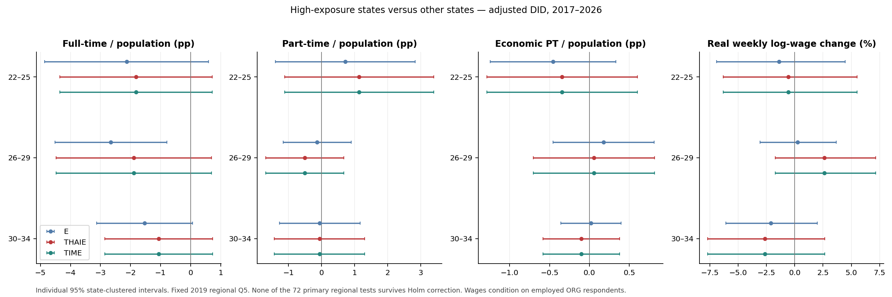
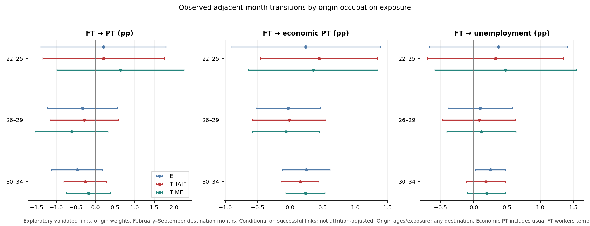
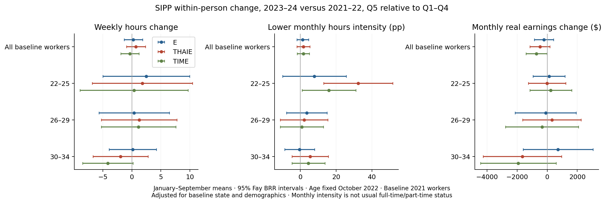
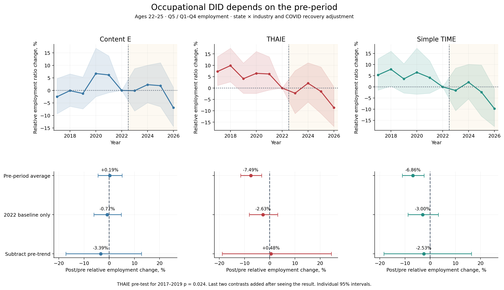

Worker adaptation across ages and employment arrangements
The study now asks how workers adjust, alongside how many jobs remain. We distinguish fewer entry opportunities, changes in hours and earnings, observed moves between employment states, and contract security. The event marks public generative-AI availability; our fixed retrospective exposure scores do not observe actual adoption or identify an experienced AI shock.
Three early-career groups under common conditions
Ages 22–25, 26–29 and 30–34 are analysed separately, with E, THAIE and simple TIME on common supported observations. Outcomes use January–September of every year. The main DID window is 2017–2026, post is 2023–2026, and event studies use 2022 as reference. Long checks extend to 2010.
| Age | FT / population, pp | PT / population, pp | Economic PT / population, pp | Real weekly log wages, % |
|---|---|---|---|---|
| 22–25 | −1.81 [−4.35, +0.72] | +1.14 [−1.12, +3.39] | −0.34 [−1.29, +0.60] | −0.57 [−6.30, +5.51] |
| 26–29 | −1.89 [−4.48, +0.69] | −0.51 [−1.69, +0.68] | +0.06 [−0.70, +0.82] | +2.62 [−1.71, +7.14] |
| 30–34 | −1.07 [−2.86, +0.73] | −0.06 [−1.43, +1.31] | −0.10 [−0.58, +0.38] | −2.65 [−7.68, +2.66] |
All adjusted THAIE regional intervals include zero; none of the 72 primary regional comparisons survives Holm correction. Direct common-support age contrasts also account for cross-equation state-cluster covariance; none survives the separate 36-test correction. We therefore cannot identify an age boundary at 25, 29 or 34. Differences between age-specific p-values are not evidence of different effects.

Employment counts and pre-trends tell a different part of the story
| Age | Full-time, % | Part-time, % | Economic-reason PT, % |
|---|---|---|---|
| 22–25 | −8.21 [−12.87, −3.30] | −2.45 [−14.59, +11.41] | −7.53 [−34.00, +29.56] |
| 26–29 | −2.79 [−7.45, +2.11] | −1.26 [−12.42, +11.33] | −7.70 [−30.07, +21.81] |
| 30–34 | −0.62 [−5.16, +4.13] | −20.89 [−30.44, −10.03] | −11.91 [−29.60, +10.22] |
The occupational count model estimates high-versus-other employment ratios within states, retaining zero group counts where the combined total is positive. The DID contrasts average 2023–2026 log ratios with average 2017–2019 and 2022 ratios. It does not measure the same person's transition. Ages 22–25 show a negative full-time contrast, but its 72-test Holm p-value is 0.101. THAIE's full-time pre-test is p = 0.848 in 2017–2019 and p = 0.000726 in 2010–2019. A short stable baseline does not resolve the longer timing problem. The age 30–34 part-time decline also has a rejected short pre-test, p = 0.042.
Separate occupational quality-share and wage models are available. Six adjusted primary occupational wage models for ages 22–25 and 26–29 cannot be estimated with the required common support because controls saturate the remaining cells. These are unsupported results, not zero effects. All 1,104 planned quality specifications retain their status, including 39 that are not estimable.
Following the same workers between survey months
We added an exploratory adjacent-month CPS linkage, with January–February through August–September pairs each year. Links require consistent household/person identifiers, sex, race, state, age progression and rotation position. Exposure and age refer to the origin; the destination can be any occupation. Personal identifiers are not exported.
| Age | FT → PT, pp | FT → economic PT, pp | FT → unemployment, pp |
|---|---|---|---|
| 22–25 | +0.20 [−1.35, +1.75] | +0.44 [−0.45, +1.34] | +0.33 [−0.70, +1.35] |
| 26–29 | −0.29 [−1.16, +0.58] | −0.01 [−0.58, +0.55] | +0.08 [−0.47, +0.63] |
| 30–34 | −0.26 [−0.81, +0.28] | +0.15 [−0.14, +0.44] | +0.18 [−0.11, +0.48] |
The listed THAIE intervals include zero. Occupational FT-origin support covers 32, 44 and 50 states respectively. These rates condition on successful links and use origin cross-sectional weights without a validated attrition correction. National unweighted validation among rotation-eligible person-pairs is about 94.8% in 2010 and 90.0% in 2026. These are not official stock-reconciled gross flows or proof that a move was forced. Smaller groups frequently lack sufficient support, and unsupported models remain visible.

All workers and unequal capacity to adapt
The extension covers 16–21, 22–25, 26–29, 30–34, 35–44, 45–54, 55–64 and 65+, plus all adults and ages 22–34. Five overlapping dimensions are explored for all adults and ages 22–34, no bachelor's degree, female, Black alone, Hispanic and foreign-born workers. These are not interchangeable definitions of disadvantage. Disability, caregiving, pre-shock poverty and wealth require additional longitudinal baseline data.
The young subgroup results do not show a uniform increase in part-time or involuntary part-time work. Some long-window occupational share specifications show positive relationships, but remain timing-sensitive and conditional on employment. Subgroup associations do not establish discrimination or forced individual downgrading. The full exploratory results are retained rather than selecting only significant findings.
Data for longer adaptation paths and contract security
A 17-source assessment covers federal surveys and administrative data, state government reports and access routes, academic linkage/training research and news reporting. Linked CPS is immediately usable for short-run hours/status transitions. SIPP is the strongest public complement for monthly histories and household resources; the verified 2025 release concerns reference 2024, not completed 2026 outcomes. Intermittent CPS contingent-work supplements distinguish independent contracting, agency work, on-call work and contract firms but do not provide an annual permanent-to-contract panel.
Public QWI and J2J support hiring, separation and earnings-flow comparisons but do not disclose individual contract histories. Restricted LEHD and Washington wage/hour records are potential longer-run routes requiring approval or agreement; access has not been obtained. New Jersey enhanced-wage-record research and WIOA training histories offer additional routes. PSID's verified TAS-2025 early release excludes employment, while NLSY97 follows a cohort too old to represent current 22–25-year-old entrants. In SIPP, EJB*_CNTRC denotes union-contract coverage and must not be treated as fixed-term contract status.
Earnings remain affected by employed-worker selection and the 2023–2024 public-file rounding/topcoding changes. We verified the relevant 19 months of official CPS identifier/weight revisions against the analytical cache by hash. This does not eliminate link attrition, sample-redesign effects or unobserved confounding. The causal interpretation remains unresolved.
Results and figures
- Full English adaptation results and interpretation
- Six-page English DID and event-study figures
- Three-age regional DID under all three metrics
- Occupational full-time, part-time and economic-PT count DID
- Quality event studies and pretrend tests
- Direct age comparisons
- Observed occupational transition DID and event studies
- All-age results and demographic results
Data assessment and audit
- Worker-transition data feasibility assessment
- Seventeen-source data/access matrix
- All 1,104 planned quality models and support status
- Aggregate adaptation model-output package
- Adaptation variable and denominator dictionary
- Independent numerical validation
- Official revision-file hash verification
- CPS person-linking documentation
- Official CPS revision notes
The new extension compares quantity, quality and observed adjustment under the same exposure definitions. It does not establish that AI caused the observed changes or that harm is absent. The figure collection includes the full short and long event histories needed to assess this conclusion.
Following the same workers with corrected CPS and SIPP
The new longitudinal extension compares baseline high-exposure workers with the same people after public generative AI became available. It does not observe individual AI adoption. Custom CPS inverse-response and calibration weights change the main transition estimates little. SIPP now supplies a separate 2021–2024 person-month panel, using official four-year weights and all 240 Fay replicate weights.
The SIPP cohort contains 2,850 covered baseline workers and 136,800 person-months; 2,843 have the complete outcome periods required by the models. Exposure is frozen to the dominant 2021 occupation and age to October 2022. Existing exposure, THAIE and simple TIME use common samples. This selected baseline-worker cohort does not represent new entrants who had no baseline job. SIPP does not yet supply 2026 outcomes in this release.
Within-person changes and observed moves
For all baseline workers, adjusted THAIE Q5 relative changes are +0.70 weekly hours [−0.94, +2.35], +1.72 pp in lower monthly hours intensity [−1.88, +5.32], and −$479 in monthly real earnings [−$1,145, +$187]. Earnings include later zero-earnings periods and business losses, in September 2026 dollars. No SIPP DID survives the broad planned multiple-testing correction.
The 22–25 THAIE Q5 group has only 28 people. Its lower-intensity employment estimate changes from +9.12 pp in the basic model to +32.33 pp after adjustment; the adjusted pre-period contrast already differs from zero. The post estimate does not survive primary-family Holm correction. This sensitivity, entry into employment within the cohort, and imprecise direct transitions prevent interpreting the estimate as forced movement from full-time to part-time work. Separate comparisons cover ages 26–29, 30–34, older workers and baseline vulnerability groups; unsupported small cells are retained as missing.

Attrition and contract status
CPS response correction uses origin covariates, household-separated cross-fitting and calibration to eligible-origin margins. It addresses observed response imbalance, conditional on an ignorability assumption. It cannot recover unobserved movers or eliminate nonignorable attrition. State-cluster intervals condition on the fitted weights. The SIPP design has only two pre-event years, so it cannot establish long parallel trends.
Permanent-to-fixed-term conversion is not cleanly identified. SIPP CNTRC measures union contract coverage, while CONCHK asks about an ongoing employer arrangement only among other work arrangements. We therefore report actual employee-to-self-employment and employee-to-other-arrangement moves without renaming them contract downgrading. These flow contrasts also remain uncertain.
Official SIPP data · Longitudinal weighting · Replicate-weight documentation
Building a comparable labour-market panel
The study starts with the Census Bureau’s Basic Monthly Current Population Survey. A regional analysis needs the unemployed and people outside the labour force as well as employed workers. State identifiers, labour-force status and population denominators are retained before occupations are linked to exposure scores.
The analytical panel contains 153 months, January–September of every year from 2010 through 2026. Using the same months avoids comparing a partial 2026 with full earlier years. The annual graphs therefore show comparable nine-month observations, not full-calendar-year estimates. Rates are not seasonally adjusted.
- Read each survey with its official layout. Fixed-width files are parsed with year-specific dictionaries, including the May 2012 layout change and the earlier age-variable name. The population is civilian household members aged 16 and over with valid labour-force status and positive survey weights.
- Harmonise occupational classifications. CPS 2010 uses the 2002 Census classification. Official conversion rates connect it to 2010 codes and then to 2018 codes. The 2011–2019 data use the 2010-to-2018 bridge; 2020 onwards are linked in the 2018 classification. National conversion probabilities are applied where one-to-one matches are unavailable.
- Freeze the baseline composition. Regional exposure uses 2019 occupational employment shares. Occupational quintiles use 2019 national employment weights across all ages. Scores and group membership are held fixed in the baseline and quintile analyses; the exploratory annual-composition panel index is defined separately below.
- Aggregate outcomes and check identities. For each state, age group and year, population equals employment plus unemployment plus non-participation; full-time plus part-time employment equals total employment. National rates divide summed weighted numerators by summed denominators, rather than averaging state rates.
| Component | Coverage or definition |
|---|---|
| Geography | United States, 50 states and the District of Columbia |
| Age groups | Six non-overlapping bands from 16–24 to 65 and over, plus 22–25, 16–29, 22–27 with a bachelor’s degree or higher, 30–54, and all adults aged 16 and over |
| Exposure inputs | 19,265 task IDs, 923 detailed O*NET occupations, 798 six-digit SOC occupations, and 547 Census occupations with complete common scores |
| Employment and unemployment | Employment / population and unemployment / labour force, using CPS composite weights |
| Earnings | Outgoing-rotation-group wage and salary workers aged 22–25; weighted median weekly earnings, CPI-U adjusted to September 2026 dollars |
Classification and coverage qualifications
Probabilistic code conversion is an approximation, not an observed change in an individual’s occupation. One 2010 conversion group whose published probabilities summed to more than one was left unmatched rather than forced to sum to one. A PUMS aggregate occupation code was reconciled with the CPS code list. Unmatched occupations remain in the population aggregates and are recorded separately in occupational calculations.
Source files, months, dictionaries and SHA-256 hashes are listed in the CPS source manifest. The BLS historical-comparability guidance remains relevant even after harmonisation.
Three measures under the same conditions
All three indices use the same task inputs, predicted human durations, occupational hierarchy and matched occupations. Content exposure e is a shared BGE-M3 prediction of the Eloundou β-style task rating. It is not a direct observation of workplace automation.
| Measure | Task-level calculation | Interpretation |
|---|---|---|
| Content exposure E | e | AI relevance to task content, without duration adjustment |
| Time-Horizon AI Exposure, THAIE | e × p(d) | Content exposure discounted by a retained completion curve at predicted human duration d |
| Simple time weighting, TIME | e × min(1, h50 / d) | A transparent piecewise duration discount using the same horizon |
b = ln(4) / log₂(h₅₀ / h₈₀)The retained GPT-5 snapshot uses h₅₀ = 203.012577 minutes and h₈₀ = 38.312431 minutes. This is a transferred benchmark curve, not an estimated success probability for each CPS worker.
Task scores are averaged within detailed O*NET occupations, then within SOC groups and linked Census occupations. State scores weight occupational exposure by fixed 2019 employment shares. Occupational quintile cut-offs are employment-weighted; regional quintiles divide the 51 state/DC scores into roughly equal numbers of regions.
See the THAIE method page for the wider measurement programme. The curve is deliberately frozen here to keep the US comparisons like-for-like.
Explore the national and state trends
Choose an age group, exposure index and view. The highest-exposure quintile is Q5. Each selection draws only the charts currently in view; data for an individual state are loaded when selected.
Loading the matched annual data.
Employment-to-population ratio
Unemployment rate
Real median weekly earnings
Show values for the selected charts
Re-examining the original −10.48% gap
The starting result compared employment growth in the highest THAIE occupational quintile with growth in Q1–Q4 among 22–25-year-olds between 2022 and 2026. Q5 employment fell by 1.65%, while Q1–Q4 employment rose by 9.86%. Their relative growth ratio gives a −10.48% gap. This is a relative employment-count comparison, not a 10.48-point fall in the employment rate.
| Adjustment | Content E | THAIE | Simple TIME |
|---|---|---|---|
| National common-sample comparison | −9.25% | −10.52% | −11.28% |
| State × industry comparison | −6.09% | −7.17% | −8.35% |
| Additional COVID recovery adjustment | −6.94% | −8.32% | −9.55% |
| Subtract the 2015–2019 pre-trend | −12.10% | −5.94% | −8.82% |
The common-sample −10.52% differs slightly from the original −10.48% because the model requires common state–industry support. With industry and COVID adjustment, THAIE’s 95% interval is −16.51% to +0.68%. After subtracting the pre-trend it is −17.53% to +7.30%. Negative point estimates remain, but the evidence does not establish a precise, robust gap or THAIE’s superiority over the alternatives.
Difference-in-differences around public generative AI
ChatGPT’s public release on 30 November 2022 defines a common event. The annual matched-month data put 2022 before the event and 2023–2026 after it. This marks public availability, not the invention of generative AI or simultaneous adoption by every firm.
The regional DID compares Q5 with Q1–Q4 using state and year fixed effects. Weights are fixed at each age group’s 2019 population, or 2019 labour force for unemployment. The adjusted model adds 2019 industry shares interacted with year, adult COVID employment losses and recovery gaps interacted with year, and separate Q5 departures in 2020 and 2021. The pandemic departures mean those two years do not identify the pooled pre-event contrast.
| Measure | Employment rate, pp | Unemployment rate, pp |
|---|---|---|
| Content E | −1.41 [−3.09, +0.28] | +0.45 [−0.53, +1.43] |
| THAIE | −0.67 [−2.82, +1.47] | +0.40 [−0.60, +1.40] |
| Simple TIME | −0.67 [−2.82, +1.47] | +0.40 [−0.60, +1.40] |
All intervals include zero. None of the twelve primary comparisons, three measures by two outcomes by two model specifications, survives Holm adjustment. Comparing the 22–25 and 30–54 age groups directly also gives an imprecise age-gap DID, so differences in individual age-group p-values should not be read as evidence of a youth-specific effect.

Pre-trends limit causal interpretation
With 2022 normalised to zero, the adjusted THAIE test of the 2017–2019 employment pre-coefficients gives p = 0.079. Extending the pre-period to 2010–2019 rejects their joint equality to zero at p < 0.001. A longer history exposes instability that a short before-and-after comparison can miss. Failure to reject a short-window pre-test would not prove parallel trends either.

The occupational contrast is more negative, but sensitive
A supplementary model compares Q5 and Q1–Q4 employment within state–industry–year cells. Its DID is the change in the average log employment ratio from 2017–2019 and 2022 to 2023–2026, converted back into a percentage. This is a multi-period contrast from unrestricted annual group differences, rather than an assumption that the post-event effect is identical every year.
| Measure | Relative employment change | Individual 95% interval |
|---|---|---|
| Content E | +0.19% | −4.49% to +5.11% |
| THAIE | −7.49% | −11.54% to −3.25% |
| Simple TIME | −6.86% | −11.09% to −2.42% |
THAIE’s negative contrast survives adjustment within the eighteen supplementary occupational comparisons. However, its 2017–2019 pre-coefficients also reject at p = 0.024. After this diagnostic, two additional sensitivities were calculated and labelled as post-result checks. Using 2022 alone as the baseline gives −2.63% [−8.11%, +3.17%]. Subtracting the 2017–2019 slope gives +0.48% [−18.88%, +24.46%]. These checks reveal dependence on the pre-period; they do not repair identification automatically.

Inference, sensitivity checks and age comparisons
Intervals use state-clustered CR1 covariance estimates and t critical values with 50 degrees of freedom in the 51-region sample. They are not full CPS survey-design intervals. Primary robustness checks include the long 2010–2026 window, omitting 2020–2021, Q5 against Q1 alone, omitting DC, equal state weights, continuous one-standard-deviation exposure, a 2022-only baseline and a 2017 placebo. The adjusted THAIE regional estimates remain imprecise. Q5-versus-Q1 estimates have particularly wide intervals.
The eleven age/education groups are exploratory comparisons. The direct THAIE young-adult age-gap estimate is +0.15 pp [−2.06, +2.36] for employment and +0.15 pp [−0.84, +1.14] for unemployment. Adults are not assumed to be unaffected by AI.
View the age-group comparison · Regional sensitivity estimates · Direct age-gap contrasts

Fixed-effects panels across states, sectors and years
The extension constructs state–industry and state–occupation panels for 2010–2026. The main event window is 2017–2026, with 2023–2026 as the post-release period. All outcome years use January–September. Three additional CPS months complete the full-year 2019 baseline, bringing source processing to 156 months without extending the outcome window.
Panel construction and additional variables
The industry panel contains 631 retained state–industry cells across 13 major industries; the occupational panel contains 501 cells across ten civilian major occupation groups. Each is observed for 17 years and eleven separately analysed age/education groups, giving 117,997 and 93,687 rows respectively. The primary group is aged 22–25. Cells require at least 30 all-age employment person-months and 90% matched-score coverage in 2019. Retained employment coverage exceeds 99.8%, but the median 2026 youth industry cell has only 27 employed person-months. Repeated survey observations are not independent people.
CPS variables cover population, employment, conditional sector-linked unemployment, full-time and part-time work, involuntary part-time work, self-employment, wages, hours, education and demographic composition. Official BEA state accounts add lagged real GDP per capita, real GDP growth and nominal personal income per capita. The 2026 models use completed 2025 accounts. Actual AI use, contract security, benefits and tenure are not directly measured. Variable dictionary · BEA source accounts.
Fixed 2019 exposure interacted with the post period
All three measures use common occupational scores and common cells. Exposure is standardised using the 2019 all-age employment-weighted distribution. WLS weights hold each age group's state population at its 2019 value. The adjusted models include baseline demographic and government-employment composition, adult cell-level COVID losses and recovery interacted with year, lagged BEA controls, and separate exposure departures in 2020 and 2021. Adults are not assumed to be untreated by AI.
| Specification | Content E | THAIE | Simple TIME |
|---|---|---|---|
| State + industry + year | −0.097 [−0.166, −0.029] | −0.114 [−0.179, −0.050] | −0.107 [−0.172, −0.042] |
| Additive FE with composition, COVID and lagged macro controls | −0.328 [−0.481, −0.176] | −0.283 [−0.408, −0.159] | −0.308 [−0.442, −0.174] |
| State × industry cell + year, with controls | −0.341 [−0.496, −0.185] | −0.295 [−0.423, −0.168] | −0.320 [−0.457, −0.183] |
| State × industry + state × year + industry × year | −0.056 [−0.367, +0.256] | −0.030 [−0.343, +0.283] | −0.033 [−0.333, +0.267] |
For THAIE, the adjusted additive estimate is −0.283 pp, but the state–industry two-way clustered interval is [−0.577, +0.010]. The cell-FE estimate is −0.295 pp, with a two-way interval of [−0.566, −0.025]. The pairwise-FE estimate is −0.030 pp, with a two-way interval of [−0.384, +0.324]. The 12 primary industry comparisons also have Holm-adjusted p-values in the downloads.
Exposure levels and annual occupational composition
A fixed 2019 score is time invariant and its level is absorbed by state–sector cell effects. Under separate additive state, industry and year effects, its coefficient can reflect persistent between-cell differences. It is not a within-cell exposure change.
An exploratory annual index instead reweights the same fixed AI capability scores by each year's current occupational employment mix. In the 2010–2026 adjusted additive industry model, E, THAIE and TIME coefficients are −0.434, −0.487 and −0.482 pp respectively. All three two-way clustered intervals include zero. THAIE's interval is [−1.274, +0.300]. The annual-composition pairwise estimate is −0.293 pp, with an unadjusted two-way interval [−0.524, −0.062], but its p-value becomes 1.000 after Holm adjustment across 72 identified exploratory level comparisons.
This annual index is neither annual AI adoption nor changing AI capability. Current employment composition enters both the exposure aggregate and the employment outcome, creating endogeneity and potentially mechanical relationships. These exploratory estimates do not replace the fixed-baseline design or establish THAIE's superiority. Different exposure definitions also have different eligible samples; comparisons among the three measures are like-for-like within each definition.
Alternative scales, occupation panels and job quality
Population-offset PPML retains zero employment cells. THAIE's industry relative-employment estimates are −4.28% in the adjusted additive model, −4.54% with cell FE and −5.66% with pairwise FE; the last interval is [−15.81%, +5.72%]. A negative but imprecise estimate is not evidence of no effect. In the broad occupation panel, the adjusted THAIE coefficient is −0.682 pp, compared with +0.084 pp [−2.084, +2.253] under pairwise FE. Little local exposure variation remains within broad occupations after absorption.
In the industry cell-FE model, THAIE's full-time and part-time employment contributions are −0.249 pp [−0.366, −0.132] and −0.047 pp [−0.108, +0.015]. Conditional unemployment is +0.144 pp [−0.313, +0.601]. Real mean-log weekly wages imply +2.23% [−5.20%, +10.23%], using an unbalanced 514-observation sample from 45 states. This is not a precise wage null, an hourly wage effect or an estimate for unemployed entrants. Full-time and part-time status do not identify permanent and temporary contracts.
Pre-trends, inference and validation
Industry THAIE's short pre-period joint tests give p = 0.388 with cell FE and p = 0.653 with pairwise FE. Extending to 2010–2019 gives p = 0.215 and p = 0.087. Non-rejection does not prove parallel trends, and these tests concern a different unit and exposure definition from the earlier regional and occupational quintile tests. The long-window fixed-exposure pairwise estimate remains imprecise at +0.026 pp [−0.235, +0.287].
We report state-clustered CR1 and state–sector two-way clustered inference. There are only 13 industry and ten occupation clusters, so sector-cluster uncertainty matters. Negative coefficient variances from non-positive-semidefinite two-way covariance estimates are withheld rather than clipped. These are not full CPS survey-design standard errors. Independent explicit-dummy WLS and Poisson GLM checks matched the absorbed models; aggregate accounting and a known-coefficient synthetic recovery were also checked.
View the five-page panel results PDF Download main coefficients
Inspect supporting model outputs and data definitions
- Fixed and annual exposure-level models
- PPML, job quality, wages and hours
- Separate age-group regressions
- Panel pre-trend tests and sensitivity results
- Panel event-study coefficients
- Full variable dictionary and outcome coverage
- Panel coefficient tables and variable definitions ZIP
The ZIP contains aggregate model outputs and data definitions, not raw CPS records or a standalone end-to-end reproduction package. The earlier DID reproduction package remains separately available below.
Employment quantity and job quality
Nationally, THAIE Q5 workers aged 22–25 experienced a 3.34% fall in full-time employment and a 6.53% increase in part-time employment from 2022 to 2026. Their full-time share fell from 82.94% to 81.52%, while the share in part-time work for economic reasons rose from 2.26% to 4.04%.
Real median weekly earnings rose from about $873 to $904, or 3.55%, in September 2026 dollars. This describes wage and salary workers who remain observed in employment. Selection and changes in worker composition can affect the median, so a rising median is not evidence that every worker’s pay improved.

The regional THAIE DID for full-time employment divided by population is −1.81 pp [−4.35, +0.72]; the part-time counterpart is +1.14 pp [−1.12, +3.39]. These sum to the total employment-rate estimate. Occupational full-time employment gives a more negative supplementary contrast, but the occupational pre-trend qualifications still apply.
Data, code and audit trail
The public release contains aggregate results, the data behind the explorer, an English figure collection and an aggregate-data DID reproduction package. No individual CPS records, private local paths, embeddings or submitted manuscript are distributed here.
Read and inspect
The reproduction package starts from the saved state and state–industry aggregates. It reproduces the primary DID and supplementary occupational contrasts without re-fitting the upstream task predictors or redistributing source microdata. Independent statsmodels implementations matched the regional coefficients and cluster covariances to numerical precision. A separate Binomial GLM also checked the occupational count model on an eight-state subset.
Related literature and source verification
This update registers all studies supplied for the review, separating the two Norwegian papers into distinct entries. Institutional abstracts and author accounts are distinguished from full-text access. Exact inaccessible revision coefficients are not presented as independently verified results. Working papers, research notes and policy essays are not interchangeable causal evidence.
The evidence concerns several distinct quantities. Exposure captures technical potential, adoption records a firm's use or investment, employment stocks count existing positions, and hiring measures entries. Neither an occupational employment decline nor a declining junior share necessarily implies rising unemployment or fewer junior workers in an adopting firm. These differences are central to interpreting the apparent disagreement.
Exposure and labour-market entry
Brynjolfsson, Chandar and Chen's August 2026 revision documents a 19% relative employment shortfall for workers aged 22–25 in exposed occupations through June 2026. The authors classify the result as descriptive, note educational attenuation and some earlier divergence, and identify hiring as the principal adjustment margin. It is therefore an informative benchmark for our occupational pattern, rather than a causal parameter against which our estimate can be directly calibrated. Primary paper.
Administrative evidence also examines different entry outcomes. Orr, Tucker and Warren report lower initial employment and earnings for highly exposed college majors. Tucker's QWI study concerns ages 22–24 in industry–state cells and distinguishes hiring levels from hiring rates. These designs motivate examining entry and industry allocation, but neither is identical to a state-wide employment-to-population ratio. Our current CPS stocks do not reproduce their hiring-flow estimates. Orr, Tucker and Warren; Tucker.
Atkinson and Yamco's CPS analysis associates young exposed employment weakness with reduced entry from non-participation. Its young group is 20–24, not 22–25. The UK study by Klein Teeselink is also included in our literature register, although its exact coefficients remain unverified in this audit. Its exact coefficients are reserved for a full-text verification. Dallas Fed research note; UK paper record.
Adoption and workforce composition
Adoption-based evidence is heterogeneous. The primary seminar account of Hosseini and Lichtinger supports slower junior hiring at adopting firms. We distinguish that original account from the inaccessible revised full text and do not mix their sample vintages. Humlum and Vestergaard's October 2026 author account reports precise null earnings and hours effects in Denmark, despite organisational changes. Its outcome records end in December 2024, so publication in 2026 does not supply evidence about agentic-AI diffusion during 2026. Hosseini and Lichtinger seminar; Humlum and Vestergaard author account.
Chandar and Klein Teeselink's November 2026 multinational study finds a lower junior share primarily through senior expansion; the junior headcount estimate is negative but insignificant. Kharazian, Simon and Stevens instead report expanding entry-level headcount among intensive AI spenders. The latter outcome is a stock, not a direct estimate of new hires. Adoption selection, the instrument's exclusion restriction, market-share reallocation and professional-profile coverage remain relevant. Firm-relative expansion can coexist with sectoral weakness. Multinational paper; Ramp–Revelio research.
Timing, remote work and aggregate counterpoints
Frank and colleagues document deterioration preceding ChatGPT, challenging a release-date causal interpretation. Lambert and Schindler find that jointly including remote-work exposure substantially attenuates the AI relationship. The stronger claim that remote work explains every exposed-employment pattern is not established by that abstract or by our study. Iscenko and Curto Millet offer a timing and monetary-policy critique, which should be presented as an alternative explanation rather than a separately identified causal effect. Frank et al., October revision; Lambert and Schindler; Iscenko and Curto Millet.
Fairlie and Wu's recent-graduate CPS paper and Gimbel, Kinder, Kendall and Lee's aggregate assessment provide counterpoints to exposed-subgroup findings. We verified the former's bibliographic record but could not audit its full-text effect bounds. The verified Budget Lab article is dated October 2025; a synthetic-DiD design is not documented in that particular article and must not be attributed to it without a separate citation. Broad nulls and concentrated subgroup changes can coexist. Fairlie and Wu; Budget Lab.
Norwegian evidence comprises two separate papers. Facius and Iacono report no robust displacement through March 2025. Hernæs and Kostøl extend observations to February 2026 and report an imprecise young-worker exposure-quintile comparison, while rejecting parallel pre-trends across age groups. Neither insignificance nor cross-country disagreement identifies institutional protection as the explanation. Facius and Iacono; Hernæs and Kostøl.
Version corrections and evidence register
The discovery review is by Alex Imas and Jacob Schaal. Its page displays 29 September 2026 and says it covers research through October 2026. Dallas Fed's original note is dated 6 January 2026; March is a reposting date. The Humlum–Vestergaard revised title differs from the 2025 title. Our verified Budget Lab citation is the October 2025 article; a synthetic-DiD design is not attributed to it without a separate version. The UK paper's exact numerical claims and the revised Hosseini–Lichtinger sample and coefficients remain flagged for full-text checks.
Sixteen-study literature matrix · BibTeX with verification notes · Sources and access status
Download the full English review and discussion
Adaptive capacity and observed adaptation
Manning and Aguirre (2026) already examine prospective adaptive capacity through financial buffers, age, local opportunities and skill transferability. Our contribution concerns observed employment-quality and transition patterns under comparable exposure measures, rather than a claim to be the first adaptation study. Their capacity index does not itself establish realised AI-induced transitions. Manning, Aguirre, Muro and Methkupally’s institutional account.
What the evidence can support
The −10.48% occupational statistic is a relative employment-count gap. It is not an employment-probability effect, an estimate of jobs destroyed by AI, or directly comparable in magnitude with ADP's 19% benchmark. Our regional DID is inconclusive, while the negative industry cell-FE association and imprecise pairwise estimates concern different retained variation.
Exposure potential is not actual adoption. The annual composition index is endogenous to occupational reallocation, and identical regional THAIE/TIME quintiles are not independent replications. Shared inputs and specification-dependent estimates do not establish the causal or predictive superiority of one metric.
Pre-trends, pandemic recovery, industrial reallocation, monetary conditions and remote work remain competing explanations. Remote-work exposure is not directly controlled in the current regressions. State-by-year and sector-by-year effects absorb specified common shocks, not every local age-specific shock. A November 2022 availability event is not randomly assigned adoption.
The original repeated cross-sectional stocks do not independently identify hiring, layoffs or transitions from non-participation. The new exploratory adjacent-month links directly observe selected short-run transitions, while hiring and broader entry mechanisms require further flow data and attrition validation. Selected-worker wages and full-time status do not fully measure job security or career progression. Broad aggregate nulls, subgroup weakness and adopter-firm growth can coexist.
The contribution is a common-input comparison of exposure metrics, fixed pre-pandemic composition, explicit regional and occupational denominators, and an audit of the identifying variation retained by alternative fixed effects. A stronger next design needs pre-period teleworkability, independently observed adoption, QWI hiring and separation flows, and attrition-adjusted CPS rotation-group transitions beyond the exploratory links reported above. QWI ages 22–24 must remain distinct from CPS ages 22–25.
Primary sources and methodological reference
- US Census Bureau, Basic Monthly CPS
- US Census Bureau, industry and occupation code lists and crosswalks
- Bureau of Labor Statistics, historical comparability of occupation and industry data
- Bureau of Labor Statistics, public data API, including CPI-U series CUUR0000SA0
- OpenAI, Introducing ChatGPT, 30 November 2022
- Roth (2022), Pretest with Caution, American Economic Review Insights